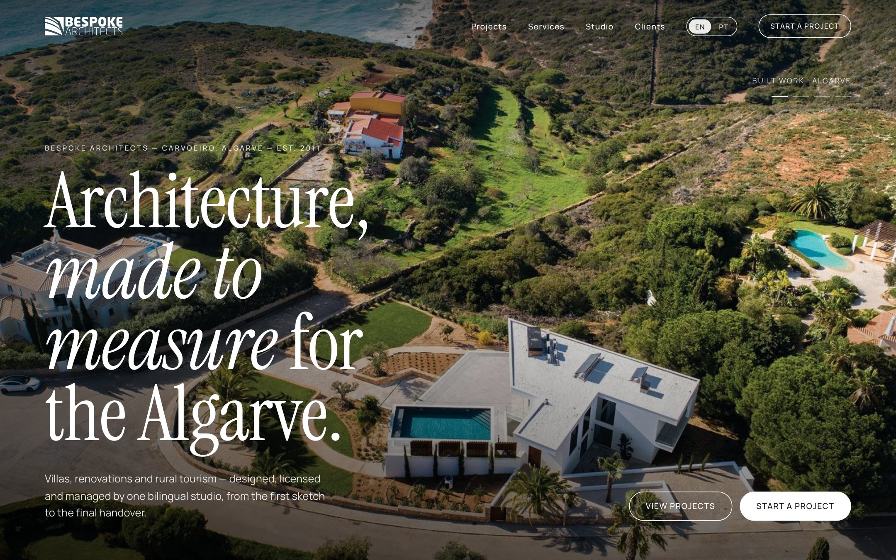
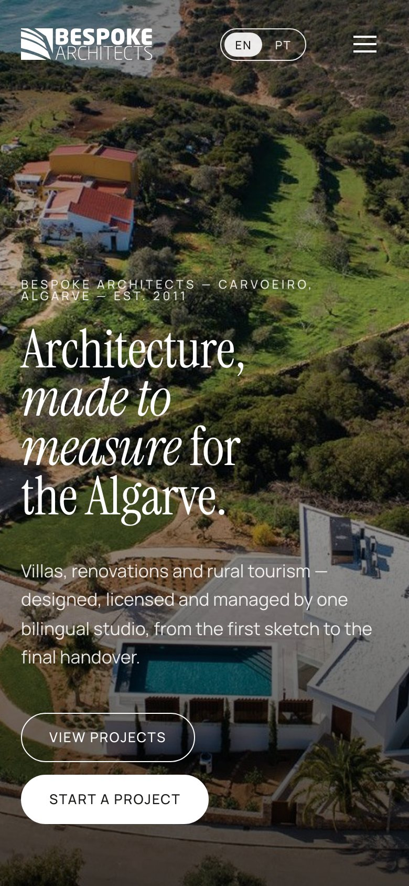

bespokealgarve.com


01 / 07
Bespoke Architects
Architecture studio · Carvoeiro, AlgarveGabinete de arquitetura · Carvoeiro, AlgarveArkitektfirma · Carvoeiro, AlgarveRedesignRedesignRedesignA complete redesign for an architecture practice: 37 projects with filters and full galleries, bilingual EN/PT, team, testimonials and project enquiries.Redesign completo para um gabinete de arquitetura: 37 projetos com filtros e galerias completas, bilingue EN/PT, equipa, testemunhos e pedidos de projeto.Et komplet redesign for en arkitektvirksomhed: 37 projekter med filtre og fulde gallerier, tosproget EN/PT, team, udtalelser og projekthenvendelser.
EN · PTEN · PTEN · PT37 projects37 projetos37 projekterGalleriesGaleriasGallerierEnquiry formFormulárioHenvendelsesformular
Preview available on requestPré-visualização a pedidoForhåndsvisning på forespørgsel